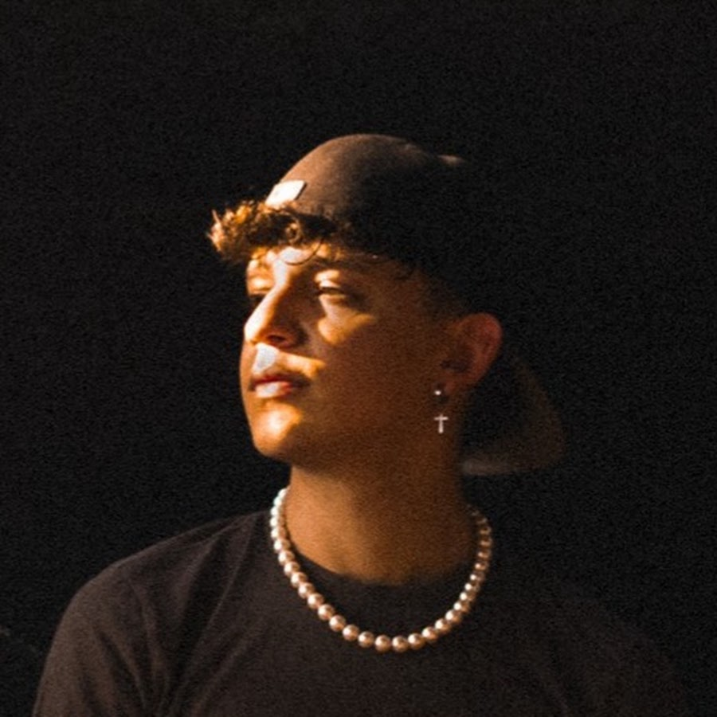
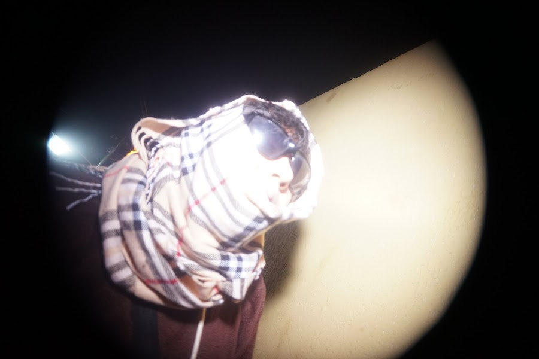
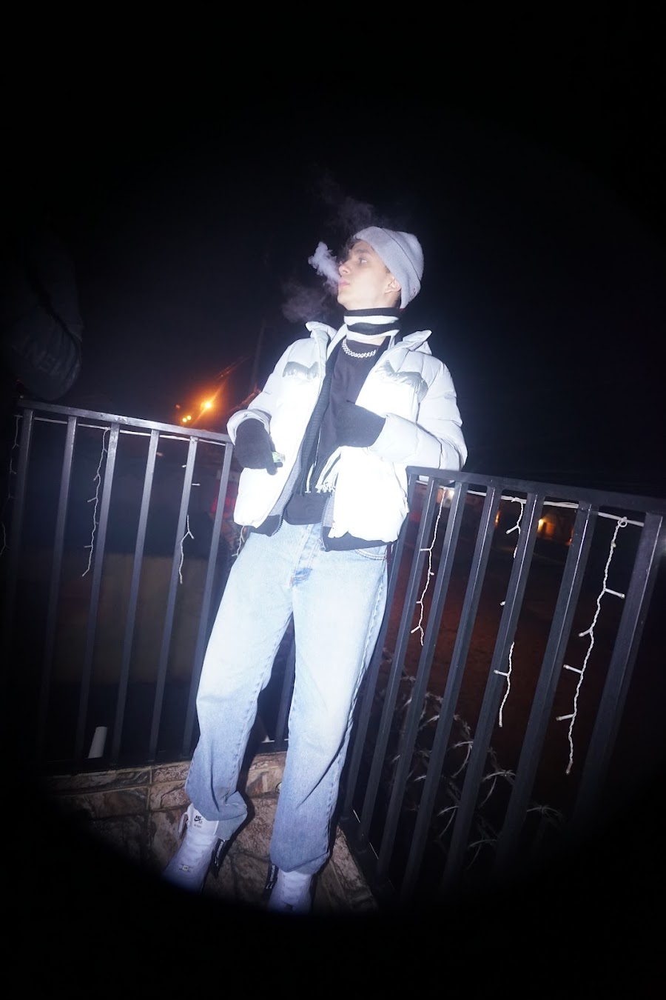
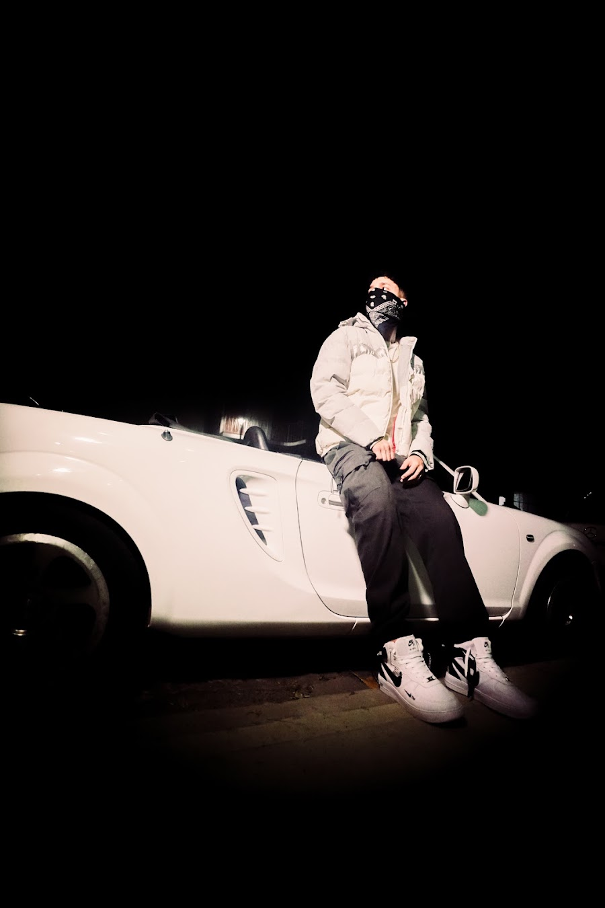

01↗PLATAFORMA CREATIVA · ASUNCIÓN, PARAGUAY
Una voz.
Muchos ecos.
Música, imágenes y comunidad. ECO conecta artistas que comparten una misma energía, sin perder lo que hace único a cada uno.

ECOASUNCIÓN
PARAGUAYEST. INDEPENDIENTE
PARAGUAYEST. INDEPENDIENTE
01 / EL PROYECTODE UNA IDEA A UN MOVIMIENTO
El arte nos conecta.
El eco nos reúne.
ECO Studios es una plataforma creativa que conecta artistas, música, producción y cultura audiovisual.
Nació de la amistad, de hacer cosas juntos y de la convicción de que cada artista puede tener su propio sonido dentro de una identidad compartida. No se trata de sonar igual: se trata de crear en comunidad y hacer que cada obra llegue más lejos.
La idea del nombre ECO, según la historia compartida por el equipo, apareció en un sueño de Ascarza. Una imagen sencilla para algo que sigue creciendo: lo que creamos resuena en los demás.
Conocé al equipo ↘01MÚSICA ORIGINAL
02IDENTIDAD PROPIA
03CREACIÓN COLECTIVA
04VISIÓN AUDIOVISUAL
02 / EL ROSTERARTISTAS DEL COLECTIVO
Distintas voces.
Un mismo eco.
Descubrí a las personas que forman parte de la escena ECO. Los enlaces de escucha llevan a páginas musicales verificadas o a lanzamientos colectivos donde participan.
Nota editorial: las imágenes colectivas se identifican como tales. Los enlaces de escucha de artistas sin página individual confirmada dirigen al catálogo colectivo de ECO, no a perfiles inventados.
03 / CONOCÉLOSPERFILES Y ESCUCHA
ASCARZA
Fundador de ECO Studios, productor y artista urbano. Según la historia del equipo, la idea del nombre ECO apareció en un sueño; hoy el proyecto conecta distintas voces bajo una identidad compartida.
UrbanoProducciónFundador
LILMARTINCHO
Artista y compositor que combina sensibilidad melódica y energía urbana. Entre sus lanzamientos publicados figuran “Nubes Negras”, “Localizarte” y “Fino y Fernet”.
UrbanoComposiciónArtista
FEDOU
Artista que cruza rock y trap, y creador audiovisual. También trabaja con edición de audio, fotografía y vídeo, aportando una mirada musical y visual a los proyectos.
RockTrapEdición de audioFotografía y vídeo
STRI
Artista de ECO con un sonido plug. Su canal de YouTube reúne sus lanzamientos y material audiovisual; estamos ampliando esta ficha con más información de su trayectoria.
PlugUrbano
GIOBATA
Artista de ECO con canal propio en YouTube. Su ficha irá creciendo con sus lanzamientos, colaboraciones y novedades audiovisuales.
ArtistaColaboraciones
GHB
GHB forma parte de la escena de ECO y aparece en las sesiones en vivo del colectivo, entre ellas “Martini (Live)” y “No Les Da (Live)”. Su canal reúne su presencia artística y es el punto de partida para descubrir sus publicaciones y evolución musical.
UrbanoColaboracionesEn vivo
LK
Integrante nombrado por el equipo de ECO. La ficha se completará cuando tengamos sus enlaces oficiales y una breve presentación aprobada.
Roster ECO
COLKI
COLKI es un artista paraguayo que transforma la ambición en sonido y las emociones en identidad. A través de versos que hablan de superación, hambre de crecimiento, amor, nostalgia y familia, busca conectar con lo que cada persona vive, siente y sueña. Su música nace de la dualidad entre querer llegar más lejos y no olvidar aquello que lo hace humano.
UrbanoColectivo
04 / CATÁLOGOLANZAMIENTOS Y SESIONES
La música habla
por nosotros.
Un punto de partida para descubrir el sonido de ECO. Cada botón abre una página de música real en Apple Music.

ALBUM EN VIVO · 2025ECO LIVE ATBLACK MANGO20 canciones · Escuchar ↗ CATÁLOGO DEL ARTISTAASCARZAExplorar lanzamientos ↗
 CATÁLOGO DEL ARTISTALILMARTINCHOExplorar lanzamientos ↗
CATÁLOGO DEL ARTISTAFEDOUExplorar lanzamientos ↗
CATÁLOGO DEL ARTISTALILMARTINCHOExplorar lanzamientos ↗
CATÁLOGO DEL ARTISTAFEDOUExplorar lanzamientos ↗
♪
El catálogo también conserva colaboraciones históricas del colectivo, con artistas que compartieron escenario en distintas sesiones en vivo.
Explorar el álbum completo ↗05 / ECO EN VIVOBLACK MANGO · SESIÓN EN DIRECTO
UNA EXPERIENCIA DEL COLECTIVO
La energía del show.
Desde donde estés.
ECO Live at Black Mango
Una muestra de ECO compartiendo escenario: música, colaboraciones y la energía del colectivo en vivo. Dale play y viví la sesión directamente desde esta página.
CANAL OFICIAL DE ECO ↗La reproducción automática comienza sin sonido por las restricciones de los navegadores. Activá el audio desde el reproductor.
05 / IMAGEN Y MOVIMIENTOPRODUCCIÓN AUDIOVISUAL
El sonido también
se ve.
La identidad de un artista vive en sus canciones, sus imágenes y la manera en que se presenta al mundo.
ECO integra música y cultura audiovisual: fotografía, videoclips, sesiones y piezas visuales que acompañan la historia de cada lanzamiento.
Gastón OV (GCardus) forma parte del equipo audiovisual de ECO Studios. Su trabajo acompaña la identidad del colectivo a través de videoclips, fotografía y sesiones, ayudando a traducir la energía de los artistas en imágenes.
Consultar por un proyecto ↗
MÚSICA · FOTOGRAFÍA · VIDEO
VIDEOCLIP DESTACADO
MÁS VIDEOS EN EL CANAL OFICIAL DE ECO ↗
ECO Studios en movimiento.
Videoclips y sesiones del colectivo en un espacio audiovisual propio.
LANZAMIENTO COLECTIVO · EN VIVO
ESCUCHAR EL ÁLBUM ↗
ECO LIVE AT BLACK MANGO
Una sesión en vivo que reúne colaboraciones y la energía del colectivo sobre el escenario.
06 / DETRÁS DEL ECOHISTORIAS Y CONEXIONES
Lo que nos une
también cuenta.
Los detalles que rodean a una canción pueden contar tanto como la canción misma. Este espacio crecerá con historias compartidas por el equipo.
Un nombre que llegó en un sueño
Según la historia que compartió el equipo, Ascarza soñó con el nombre ECO. La idea terminó convirtiéndose en una identidad que conecta distintas voces.
Una escena hecha en conjunto
En Eco Live At Black Mango, las colaboraciones se cruzan entre artistas. Las canciones dejan un registro de esa comunidad creativa.
Descubrir las colaboraciones ↗El saltamontes verde
El equipo mencionó una anécdota sobre un saltamontes verde relacionada con personas involucradas en una canción. La historia completa se añadirá cuando tengamos el relato exacto.
CONTENIDO DEL ESTUDIOACTUALIZACIONES APROBADAS
Lo nuevo en
ECO Studios.
Artistas, lanzamientos, noticias y proyectos publicados por el equipo de ECO Studios.
07 / EL EQUIPODETRÁS DE LA IDEA
Un colectivo
se construye juntos.
ECO crece gracias a artistas, productores y personas que aportan su oficio, su tiempo y su visión.
08 / CONTACTOTRABAJEMOS JUNTOS
¿Creamos
algo juntos?
Para colaboraciones, producciones musicales o proyectos audiovisuales, escribinos a través de nuestros canales oficiales.
CATÁLOGO MUSICALEscuchar ECO ↗DESCUBRÍ EL ROSTERConocé a los artistas ↘
El correo y las redes oficiales se añadirán aquí cuando estén confirmados. No publicamos datos de contacto provisionales.